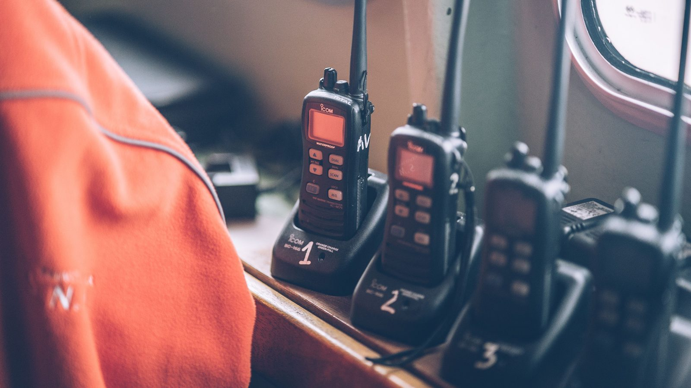

Itapema aluga um imóvel de 253 m² na Meia Praia por R$ 228,7 mil para a administração do Corpo de Bombeiros ficar 18 meses fora da sede
O contrato de setembro que tirou a administração do quartel da sede.
Na sexta-feira 2 de outubro saiu no Diário Oficial dos Municípios o contrato 169/2026 de Itapema: R$ 83.333,30 em rádios transceptores digitais VHF para o Corpo de Bombeiros Militar de Santa Catarina na cidade. Fomos ler todos os contratos de 2026 com esse mesmo destino e achamos seis contratos e um aditivo, que somam R$ 449.715,70. Três deles foram assinados entre 23 de setembro e 2 de outubro e dão R$ 103.120,10.
Em 30 segundos · Modo de Leitura, formato original Santa Informa
O Corpo de Bombeiros de Itapema é do estado.
Quem paga a tropa é o Governo de Santa Catarina.
Mas quem comprou os rádios deles foi a Prefeitura.
O contrato saiu na sexta-feira 2 de outubro.
São rádios VHF portáteis, por R$ 83.333,30.
Não é o primeiro deste ano.
Fomos ler todos os contratos de 2026.
Achamos seis contratos e um aditivo.
Juntos dão R$ 449.715,70.
Em junho foram jaquetas operacionais.
R$ 83.324,50, mais R$ 7.142,10 em agosto.
Em julho, um mini cortador de ferragem.
Serve para tirar gente presa em carro batido.
Custou R$ 27.439,00.
Em setembro veio o aluguel da sede provisória.
Um imóvel na Rua 248, na Meia Praia.
R$ 228.690,00 por 18 meses.
Depois vieram três compras em dez dias.
EPI e material de salvamento em altura: R$ 10.140,00.
Fonte de alimentação de rádio: R$ 9.646,80.
E os rádios de sexta: R$ 83.333,30.
Essas três somam R$ 103.120,10.
Isso tudo é legal e tem nome.
Chama adesão a ata de registro de preços.
O estado faz o pregão e fixa o preço.
O município entra na mesma ata e paga.
Itapema faz isso há anos com os bombeiros.
Em 2019 entregou uma moto aquática.
Em 2020, quadriciclos.
O que não está escrito é o que é a obra no quartel.
Nem se o estado devolve algum valor.
A soma dos sete documentos é conta nossa.
Poder PúblicoPublicada em Redação Santa Informa

O Corpo de Bombeiros Militar que atende Itapema é órgão do Governo de Santa Catarina. Mesmo assim, boa parte do que o quartel usa na cidade é comprada pela Prefeitura. Na sexta-feira 2 de outubro saiu no Diário Oficial dos Municípios o contrato 169/2026, de R$ 83.333,30, para rádios transceptores digitais VHF portáteis com display. Fomos ler todos os contratos municipais de 2026 cujo objeto é o Corpo de Bombeiros da cidade: são seis contratos e um termo aditivo, que somam R$ 449.715,70.
Em 15 de junho veio o contrato 108/2026, de jaquetas operacionais, por R$ 83.324,50, acrescido em 5 de agosto de mais R$ 7.142,10. Em 6 de julho, o 111/2026 comprou um mini cortador a bateria para desencarceramento, a ferramenta que abre lataria para tirar pessoa presa em carro batido, por R$ 27.439,00. Em 15 de setembro saiu o maior de todos, o 155/2026: R$ 228.690,00 para alugar por 18 meses um imóvel de 253 m² na Rua 248, na Meia Praia, onde a administração do quartel fica durante uma intervenção na sede. Depois vieram três em dez dias: o 165/2026, de 23 de setembro, com R$ 10.140,00 em EPI e material de salvamento em altura e corte de árvore; o 168/2026, de 29 de setembro, com R$ 9.646,80 em fonte de alimentação de rádio; e o 169/2026.
O caminho é o mesmo em quase todos: adesão a ata de registro de preços. O próprio Corpo de Bombeiros faz o pregão, fixa o preço e o fornecedor, e o município entra na mesma ata e paga a conta. Foi assim nas jaquetas, no EPI, na fonte e nos rádios, todos apoiados em pregões do CBMSC. No cortador de ferragem, Itapema pegou carona em ata do Corpo de Bombeiros de Minas Gerais. Só o aluguel seguiu outro rito, por inexigibilidade de licitação. Isso não é novidade na cidade: a Prefeitura entregou uma moto aquática ao quartel em 2019 e quadriciclos em 2020, sempre na abertura da operação veraneio.
O resumo de 30 segundos está no topo e a versão completa é o texto acima. Aqui ficam as três leituras da casa sobre o mesmo assunto.
Clara, a otimista
Olhe o que foi comprado: rádio que funciona, jaqueta operacional, EPI para subir em altura e cortar árvore, e a ferramenta que abre carro batido. Nada disso é enfeite. É o equipamento que decide se dá tempo ou não dá tempo.
E tem outra coisa boa: a cidade não ficou esperando o estado. Entrou na ata do próprio Corpo de Bombeiros, pagou o preço que já estava registrado e resolveu. Itapema faz isso desde pelo menos 2019, quando entregou a moto aquática ao quartel.
Seu Prudêncio, o criterioso
Merece atenção o tamanho que isso ganhou. R$ 449,7 mil em pouco mais de três meses de assinaturas, numa despesa que a lei põe no colo do estado, já não é ajuda eventual. Vale acompanhar se isso vira rotina de orçamento municipal, porque despesa que se repete todo ano precisa de linha própria e de previsão.
Uma sugestão útil: publicar o convênio, se houver, e dizer quanto do investimento o estado repõe. Também falta explicar a obra no quartel, que já custa R$ 12.705,00 de aluguel por mês e sobre a qual não existe uma linha publicada desde 15 de setembro.
Dito isso, reconheço o benefício. Rádio digital e fonte nova resolvem o problema mais chato de uma emergência, que é equipe sem conseguir falar com equipe. E comprar por ata já licitada é o jeito rápido e correto de fazer.
Caco, o sarcástico
O Corpo de Bombeiros é do estado, a tropa é do estado, a farda é do estado. O rádio é de Itapema. A jaqueta é de Itapema. A tesoura que abre o carro é de Itapema. E o escritório, também de Itapema, fica alugado numa rua da Meia Praia.
Pelo andar da carruagem, ano que vem o município compra o estado inteiro e deixa o Governo pagando só o café.
Agora, falando sério, eu quero mesmo é que o rádio funcione. No dia em que a sua casa pegar fogo, você não vai perguntar de qual orçamento saiu o aparelho. Vai querer que o outro lado atenda. E atender, agora, ficou mais fácil.
Fontes: todos os documentos estão no Diário Oficial dos Municípios de Santa Catarina, na entidade Prefeitura municipal de Itapema: contrato 108/2026, das jaquetas operacionais, e seu 1º termo aditivo; contrato 111/2026, do mini cortador a bateria, com a inexigibilidade que o antecedeu; contrato 155/2026, do aluguel da sede provisória, com a inexigibilidade 06.047.2026; contrato 165/2026, do EPI e do material de salvamento; contrato 168/2026, da fonte de alimentação; e contrato 169/2026, dos rádios VHF, publicado em 2 de outubro de 2026. As entregas de 2019 e de 2020 estão nas notas da Prefeitura sobre a moto aquática e sobre os quadriciclos. O aluguel da sede provisória foi contado na nossa matéria de 15 de setembro. A população estimada de Itapema é a da tabela 6579 do IBGE. A reunião dos contratos e todas as somas são conta nossa, feitas em 4 de outubro de 2026.
O contrato de setembro que tirou a administração do quartel da sede.
 Itapema · Segurança
Itapema · SegurançaA força de segurança que é mesmo do município, em números.
 Itapema · Poder Público
Itapema · Poder PúblicoOutro contrato grande que a Prefeitura publicou na mesma sexta-feira.